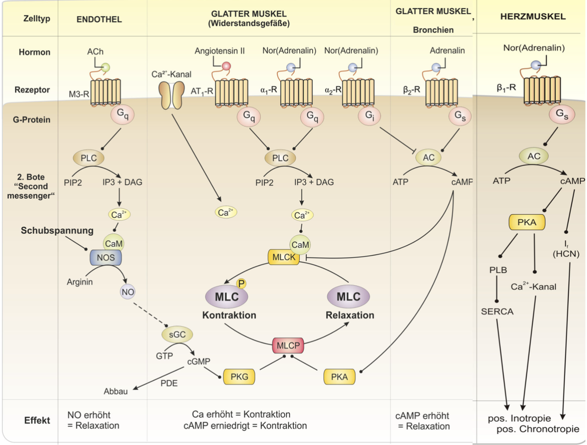
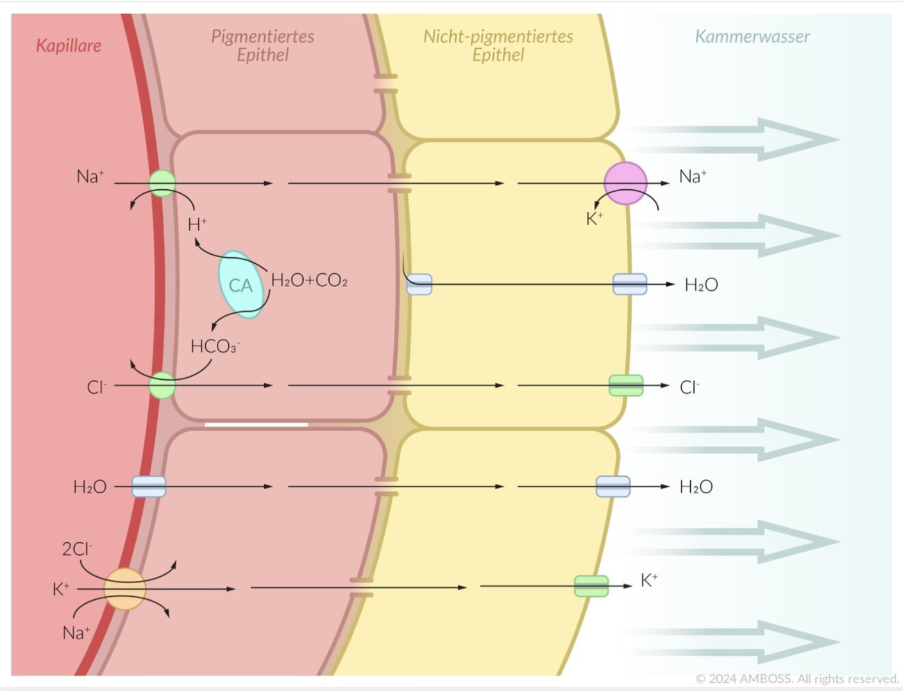
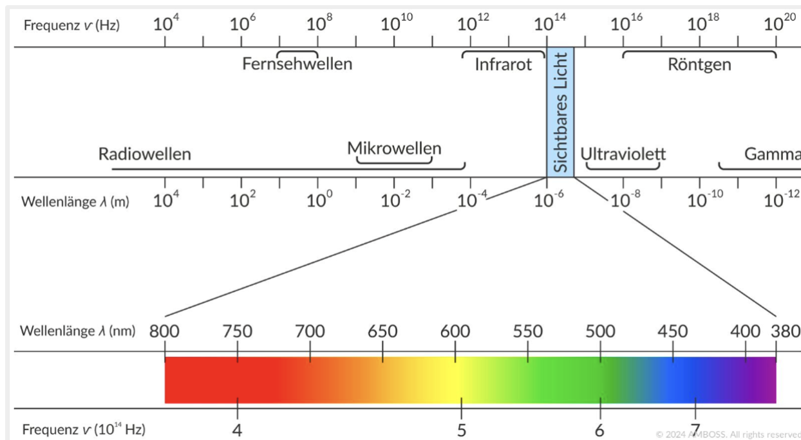
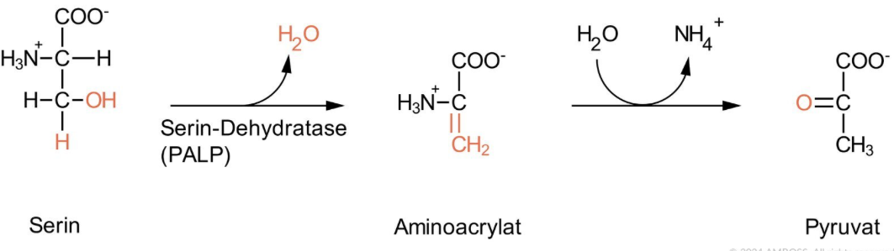
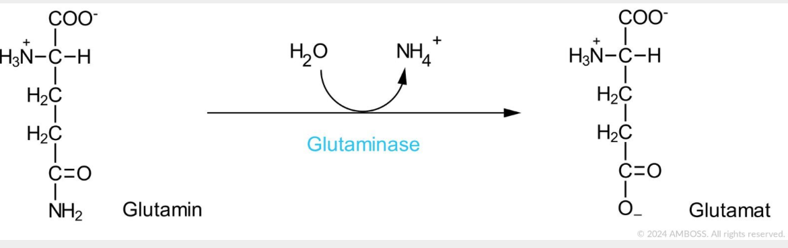
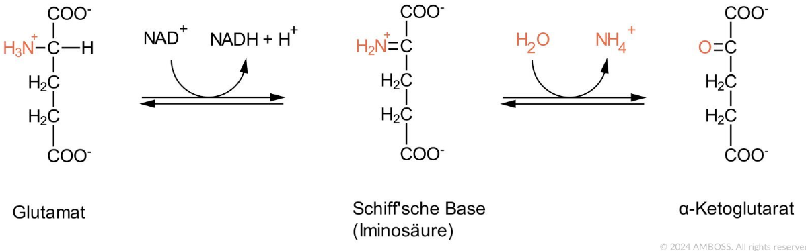

Nochmal angucken vor der Müprü
[ ] Aktionspotential Schrittmacherzelle Herz Kurve
[ ] Aktionspotential Arbeitsmyokard Kurve
[ ] Gleichgewichtspotentiale für die Ionen nachgucken
[ ] Bild angucken 
[ ] Bild angucken 
[ ] Bild angucken 
[ ] Bild angucken 
[ ] Bild angucken 
[ ] Bild angucken 
[ ] Bild angucken 
Anatomie
Blut-Liquor-Schranke
- fenestriertes Kapillarendothel
- Basalmembran
- Neurothel im Liquorraum oder Plexusepithel in den Ventrikeln
Blut-Hirn-Schranke
- fenestriertes Kapillarendothel
- Basalmembran
- Perizyten- und Astrozytenfortsätze
-> Besonderheit von Perizyten im Gehirn: können Phagozytose
Plexusepithel
- Ependymzellen (Gliazellen), einschichtig kubisch
- Mikrovilli zur Resorption
- Kinozilien zum Liquortransport
- Zonulae adhaerentes und Tight junctions
Neurothel
epitheloide Zellverbände aus modifizierten Fibroblasten
Epiduralblutung
Gehirn: Normalerweise kein Epiduralraum, bei Epiduralblutung kommt es zum Ablösen der Dura mater vom Knochen -> pathologischer blutgefüllter Epiduralraum
3. Ventrikel

4. Ventrikel
Begrenzungen
- ventral: Rautengrube (fossa rhomboidea)
- dorsokranial: Velum medullare superius und inferius (Kleinhirnsegel)
- lateral: Kleinhirnstiele
Forel- und Meynert-Achse

Brückenvenen
Sind Verbindungen zwischen Vv. superficiales cerebri und Sinus durae matris und durchbrechen die Dura mater!

Granulationes arachnoideae
Sind Aussackungen der Arachnoidea wölben aber auch die Dura mater in die Sinus rein.
N. olfactorius
Die Lamina cribrosa liegt im Os ethmoidale.
- Neuron: Sinneszellen der Riechschleimhaut
- Neuron: Bulbus olfactorius
N. oculomotorius
... bekannte Aufallsymptome
- Blick nach unten (durch intakten M. obliquus superior) und außen (durch intakten M. rectus lateralis)
N. abducens
Pons -> Sulcus bulbopontinus (zwischen Medulla oblongata und Pons) -> am Clivus in Dura -> in sinus cavernosus -> fissura orbitalis superior
Faserqualitäten
- N. olfactorius (I): Speziell viszeroafferent
- N. opticus (II): Speziell somatoafferent
- N. oculomotorius (III): Allgemein somatoefferent und Allgemein viszeroefferent
- N. vestibulocochlearis (VIII): Speziell somatoafferent
- N. accessorius (XI): Allgemein somatoefferent (Sternocleido und Trapezius) und Speziell somatoefferent (Kehlkopfmuskeln)
- N. vagus (X): Ncl. dorsalis n. vagi ist allgemein viszeroefferent
N. glossopharyngeus
④ Unterhalb Foramen jugulare: Ganglion inferius n. glossopharyngei
⑤ Zieht zwischen der A. carotis interna und V. jugularis interna sowie hinter dem M. stylopharyngeus zur Zunge und gibt folgende Äste ab
- N. tympanicus → Bildet Plexus tympanicus
- R. tubarius: Sensible Innervation der Tuba auditiva
- N. petrosus minor (aus Plexus tympanicus) → Ganglion oticum → Parasympathisch Gl. parotis, buccales und labiales
N. vagus
Zieht durch mediastium posterius.
N. hypoglossus
Verläuft zwischen: M. mylohyoideus & M. hyoglossus und zweigt sich dort in seine Äste auf.
Basalganglien
Striatum → Nucleus caudatus & Putamen
Biochemie
Trypsin
Ist eine Serinprotease und gehört zu den Endopeptidasen.
Serinprotease: Katalytische Triade aus Serin, Histidin & Aspartat.
🚨 Spaltet aber immer hinter basischen Aminosäuren Arginin oder Lysin
PKA,B,C
Sind Serin/Threonin Kinasen.
Aminosäuren
Alle proteinogenen AS haben am alpha-C-Atom ein Chiralitätszentrum und liegen in L-Form vor, d.h. die Aminogruppe liegt links vom alpha-C-Atom.
Abbau von Aminosäuren
Zwei Varianten
- Übertragen (Transaminierung) bzw. Abspalten der Aminogruppe (Desaminierung)
- Abspalten der Carboxylgruppe (Decarboxylierung)
Transaminierungsreaktionen
Transaminase: Übertragen Aminogruppe von AS auf alpha-Ketosäure.
Reaktion: AS + alpha-Ketosäure -> neue AS + neue alpha-Ketosäure
alpha-Ketosäuren Beispiele: alpha-Ketoglutarat, Oxalacetat, Brenztraubensäure (Anion ist Pyruvat).
Desaminierungen
Eliminierende Desaminierung
Abspaltung der Aminogruppe in Form von Ammoniak unter Abspaltung von Wasser.

Hydrolytische Desaminierung
Abspaltung der Aminogruppe in Form von Ammoniak unter Einbau von Wasser.
Beispiele: Glutaminase & Asparaginase -> irreversibel

Oxidative Desaminierung
Abspaltung der Aminogruppe nach vorheriger Oxidation der Aminosäure.
Aminogruppe wird nicht übertragen, sondern in Form von Ammonium-Ion freigesetzt.
Cofaktor: NAD+ oder NADP+
Beispiel: Glutamatdehydrogenase

Peptidbindung = "Amidbindung"
Peptidbindungen werden am Ribosom verknüpft!
Proteasom
besitzt ATP-abhängigen Proteasekomplex. Der aus den Untereinheiten
- 20S-UE: Unspezifische Peptidaseaktivität
- zwei 19S-UEinheiten: Spalten Ubiquitinmoleküle ab
Denaturierung
Protein verliert Struktur (Quartär,tertiär,sekundär) und wird zur Primärstruktur.
Wenn ein Protein nach Spaltung durch Peptidasen usw. noch Oligopeptid ist, wird es durch Bürstensaumständige Oligopeptidase zu Di- und Tripeptide gespalten.
Harnstoffzyklus
- Ziel: Ausscheidung von Stickstoff!!
- Aktivierung durch: N-Acetylglutamat.
Je mehr Glutamat/Acetyl-CoA vorhanden, desto mehr N-Acetylglutamat!
Querbrückenzyklus
Myosin-ATPase: Spaltet ATP -> ADP + Pi um Mosin vorzuspannen
Citratzyklus
-
Isocitratdehydrogenase kann auch über ATP gehemmt werden.
-
Succinyl-CoA-Synthetase nutzt Energie aus Spaltung der Thioetherbindung zwischen Succinat & CoA für die Substratkettenphosphorylierung.
Atmungskette
-
Wenn Atmungskette gehemmt -> Anaerobe Glykolyse mit LDH -> irgendwann Laktatazidose => Inneres Ersticken
-
Ubichininon nimmt 2e- und 2H+ entweder aus Komplex I oder II auf und wird zu Ubichinol (durch die Reduktion mit den Protonen)
Glykolyse
- Insulin steigert Transkription der Hexokinase, Glucagon hemmt
- Glucokinase ist nicht hormonell regulierbar sowie nicht über Glc-6-P hemmbar
- PFKFB2 steht für **Phosphofructokinase-2/Fructose-2,6-bisphosphat
- PFKFB2 phsophoryliert Fructose-6-Phsophat zu Fructose-2,6-bisphosphat
- Glucagon oder Adrenalin stimulieren AC -> cAMP -> PKA phosphoryliert und aktiviert Phosphatasedomäne der PFKFB2 und phosphoryliert eine Phosphoproteinphosphatase, die die Kinasdeomäne hemmt.
- Insulin verringert cAMP und macht damit genau obiges Gegenteil!
Gluconeogenese
- 2 Pyruvat für 1 Glucose
- 2 mal 2 ATP und 1 GTP = 4 ATP und 2 GTP
weil die PEPCK 1 GTP verbraucht.